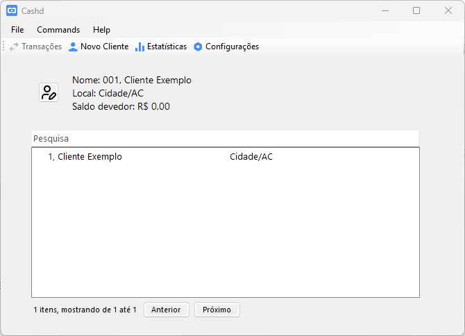
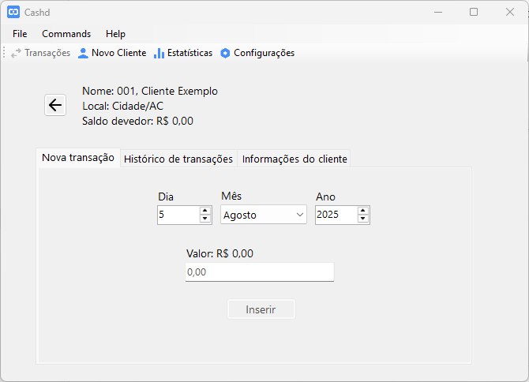
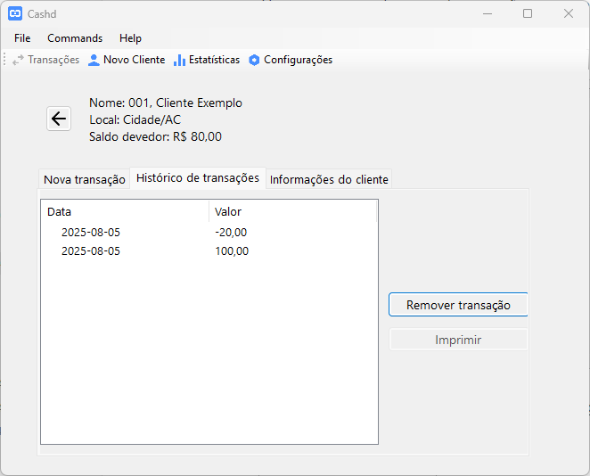
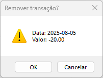
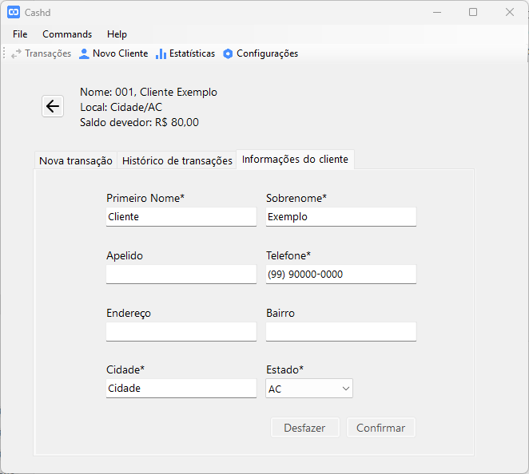
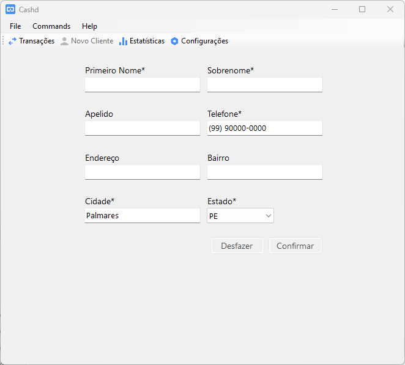
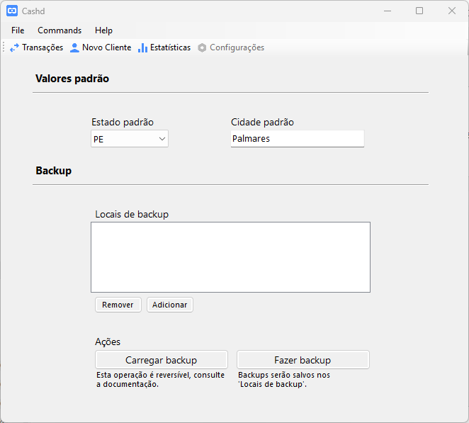

✅ O layout inicial do aplicativo do Cashd está finalizado
Agora temos formulários em duas colunas, além de espaçamentos e alinhamentos padronizados.
Isto conclui a segunda tarefa de: "Melhorar interface, permitindo aumentar a largura do conteúdo e organizar inputs em duas colunas" .
FormHandlerTrês classes foram adicionadas para lidar com a criação dinâmica de formulários:
Uma instância da nova classe FormField retorna um toga.Box modificado, essencialmente
com três elementos:
Outro atributo também importante, mas não essencial é o id, que é usado para
identificar cada input com uma string única, o FormField definido com o id
"my_field" poderá ser obtido do FormHandler:
from cashd.wigets.form import ( FormHandler, FormField ) from toga import TextInput form = FormHandler() field = FormField( label="My field", input_widget=TextInput(), id="my_field", required=False, ) form.add_fields([field]) """Adicionar o FormField ao FormHandler.""" form.fields["my_field"] """Acessar o FormField.""" form.fields["my_field"].input_widget.value """Dado inserido pelo usuário."""
Repare que também existe um parâmetro required ao definir o FormField, ele será
explicado mais adiante, no tópico "O manipulador de formulários". Mas antes, vamos falar
sobre o que se espera das linhas do formulário.
Atualmente, para fim de simplicidade e velocidade de implementação, FormRow apenas
possuem uma largura fixa, não se adaptando à largura da janela, e não aceita mais que
dois campos, com uma largura máxima fixada.
A largura dos campos atualmente está sendo gerenciada fora de FormRow, com a função
cashd.style.user_input(), que recebe um tipo de input como toga.TextInput e retorna
o toga.style.Pack padrão correspondente.
Mas no caso de uma implementação para dispositivos móveis, onde a largura da tela depende
da orientação do aparelho, seria necessário que FormHandler tivesse um
event listener, que automaticamente ativaria a rotina de reorganização dos campos em um
novo conjunto de FormRow, aumentando ou diminuindo a quantidade de inputs por linha.
O FormHandler é responsável por organizar os campos do formulário em uma grade
orientada à linhas de inputs. Ele também é responsável por passar uma função que se
ative sempre que algum tipo de interação ocorre com o input, como on_change ou
on_lose_focus, todos os campos recebem a mesma função, portanto, para oferecer
tratamentos distintos para cada uma, seria necessário acessar os metadados de cada campo.
Atualmente, para as necessidades do [[Cashd]], o único metadado que precisa ser acessado
é o fato de o preenchimento de determinado campo é obrigatório ou não, isto é passado
para cada FormField individualmente, com o valor padrão False. Ainda é possível
verificar se todos os campos obrigatórios foram preenchidos usando o método
required_fields_are_filled():
from cashd.widgets.form import FormHandler from cashd.data import get_default_customer customer = get_default_customer() """Instância de cashd.data.tbl_clientes com alguns valores preenchidos. """ form = FormHandler() form.add_table_fields(table=customer) """Adicionar campos da tabela 'clientes'.""" def on_change_form(widget): required_filled = form.required_fields_are_filled() """Verificar se todos os campos obrigatórios foram preenchidos. """ if required_filled: print("Required fields are filled!") else: print("Some required fields are still empty.") form.on_change = on_change_form
Veja que também podemos preencher um formulário com todos os campos da tabela clientes
rapidamente, isto também preenche os campos com os valores de customer, define o id
de cada campo com o nome de sua respectiva coluna no banco de dados, o label com o
respectivo display_name definido em cashd.data.tbl_clientes, e o metadado required
de acordo com o [[2025-07-08#1.1 A validação de dados agora é feita pelo sqlalchemy|tipo de dados declarado ao SQLAlchemy]].
O exemplo de código acima funciona adequadamente quando recebe uma instância de
cashd.data.tbl_clientes, mas atualmente ainda não consegue lidar com
cashd.data.tbl_transacoes, porque ainda não foi instruído sobre como lidar com campos
de data.
Todas as telas exceto a de estatísticas passaram por melhorias visuais, vamos mostrar por ordem:
A tela inicial não possui mais os três botões, em que cada um levaria à uma interação
diferente, agora, em vez disso, apenas um botão leva para um toga.OptionContainer,
que mostra um conjunto de abas que mostra todas as interações possíveis com o usuários
selecionado.

Ao clicar no ícone de usuário com uma caneta, vamos para uma tela com todas as opções que antes estavam dispostas em botões, agora dispostas em abas. Todas as interações feitas dentro deste conjunto de abas serão aplicadas ao usuário informado na parte superior.

Esta é a tela de histórico de transações:

Para habilitar o botão "Remover transação", o usuário deve primeiro selecionar alguma linha da tabela, ao remover uma transação, o usuário recebe um diálogo de confirmação, que informa qual transação será excluída. Ao confirmar, esta transação será removida, e as informações na parte superior serão atualizadas.

Já na aba "Informações do cliente" é possível ver as informações de cadastro atuais do cliente selecionado, e modificá-las:

A tela acima já segue o layout padrão de formulários definido pelo FormHandler
mencionado anteriormente, mas este não é o único lugar onde esse layout é aplicado.
As telas "Novo Cliente" e "Configurações" também seguem o novo layout de duas colunas
implementados com FormHandler:


Até o momento, os dois projetos foram desenvolvidos em repositórios separados, um aberto
chamado cashd, onde está o projeto desenvolvido com Taipy, que pode servir um único app
web para uma rede local, que pode ser acessado apenas no próprio computador, ou em
qualquer número de computadores conectados na rede local. E outro repositório
cashd-cross, fechado, onde eu desenvolvo o aplicativo stand-alone e independente de
rede, que pode ser compilado para qualquer plataforma atual, seja mobile ou para
computador de mesa (cross-platform, daí o nome).
A próxima coisa a ser feita neste projeto é unir ambas as implementações em um só repositório, reservando um namespace para cada projeto. Além disso, existem outras coisas pertinentes para se adicionar à lista de coisas a fazer:
[ ] [Cashd] Agregar os repositórios cashd e cashd-cross + Adaptar cashd com Taipy para agir como servidor.
Preparar o primeiro release do cashd-cross e uma rotina pública de build para os seus binários;
Mudar os nomes de cada projeto para cashd-server e cashd-local;
Mudar o foco do cashd-server para agir como servidor, em vez de fazer parecer um programa local usando um webview.